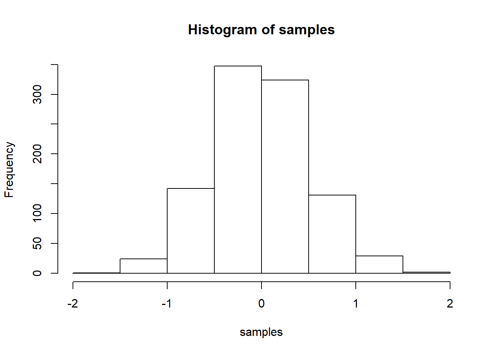

R and RStudioR is a free open-source programming language that can be used widely for statistical analysis. Another free program is Rstudio, that provides a nice graphic interface for R. We need to download R first, then download Rstudio. Both can run on PCs, Macs or Linux.
RThis is a mini course about R programming language with some useful and important functions that we need to know before we learn more advanced and tricky functions. I hope you enjoy it and please feel free to ask questions.
We can use R as a calculator. We can use addition, subtraction, multiplication and division very easily in R. For example,
15+20[1] 3512*12 # * is multiplication sign.[1] 144126/3 # / is division sign.[1] 42(2+5+7)/5[1] 2.8if you want to know more information about any function in R, you need to type help(“function name”) or ?function name.
Put numbers into variables, do simple math on the variables
a<-1
b<-2
a+b[1] 3d<-c(1,2,3)
e<-c(5,6,7)
d+e[1] 6 8 10d*e[1] 5 12 21d/e[1] 0.2000000 0.3333333 0.4285714x<-4
y<-x+6
y[1] 10There are different types of data in R such as double, character and logical data.
We can check if the variable is double or not using the following function.
x<-5
is.double(x)[1] TRUESo the answer is true. That means the variable x is double in R.
y<-"brown"
is.double(y)[1] FALSEis.character(y)[1] TRUESo, y is a character.
d<- TRUE
is.logical(d)[1] TRUEThere are some other types od data such as
s<-0/0
s[1] NaNz<-c()
zNULL6/0[1] Inf-2/0[1] -InfVectors are basic data structure in R, we use vectors almost in any code or function in R. Suppose we have a vector with n=5 elements. We can represent this vector in R as
a<-c(12,45,27,76,98) ## we use lower c to represent the vectors in R.
print(a)[1] 12 45 27 76 98(a<-c(12,45,27,76,98))[1] 12 45 27 76 98length(a) ## we use length in R to know how many values we have in the vector a for example. so here, the length of the vector a is 5.[1] 5We can use a colon to represent a vector in R.
x<-1:10
x [1] 1 2 3 4 5 6 7 8 9 10or we can write x as
x<-c(1:10)
x [1] 1 2 3 4 5 6 7 8 9 10We can also define a vector in R as a sequence in the following way
z<-seq(from=1,to=10,by=1)
z [1] 1 2 3 4 5 6 7 8 9 10or
z<-seq(1,10)
z [1] 1 2 3 4 5 6 7 8 9 10We can do some manipulation to vectors in R, for example we can use the functions: sum(), mean(), var(), sd(), max(), min(), sort, range() and so on.
x<-c(4,5,1,-2)
sum(x) ## the summation of the values in the vector.[1] 8mean(x) ## the average of the values in x.[1] 2var(x) ## the variance.[1] 10sd(x) ## the standard deviation of x.[1] 3.162278max(x) ## the maximum value of x.[1] 5min(x) ## the minimum value of x.[1] -2sort(x) ## sort the values in the vector fro the smallest to the largest.[1] -2 1 4 5range(x) ## this gives us the minimum and the maximum values in the vector x.[1] -2 5We can choose some elements from any vector in R.
x<-c(12,32,52,78,66)
x[2] ## this means we choose the second element from the vector x.[1] 32x[3:5] ## We choose the elements 3,4 and 5 from vector x.[1] 52 78 66we can also choose certain elements from a vector with some conditions, for example
x[x>55][1] 78 66or we can use the function which()
which(x>50) ## here we ask which of our elements are greater than 50, we have the 3rd, 4th and the 5th elements from vector x.[1] 3 4 5A matrix in R contains rows and columns. To define the matrix in R,
a<-matrix(c(10,15,20,25),nrow=2,ncol=2)
a ## the default matrix in R is filling the matrix using column after column. The dimension of the matrix a is 2X2. [,1] [,2]
[1,] 10 20
[2,] 15 25if we want to fill the matrix row after row, we give option to the matrix byrow=TRUE.
b<-matrix(c(10,15,20,25),nrow=2,ncol=2,byrow=TRUE)
b [,1] [,2]
[1,] 10 15
[2,] 20 25If we want to know the dimension of the matrix say for example b,
dim(b) ## dimension of matrix b.[1] 2 2s<-matrix(1:6,nrow=2,ncol=3)
s [,1] [,2] [,3]
[1,] 1 3 5
[2,] 2 4 6dim(s)[1] 2 3We can find the transpose of the matrix using t()
d<-t(s) ## transpose of matrix s
d [,1] [,2]
[1,] 1 2
[2,] 3 4
[3,] 5 6dim(d)[1] 3 2if we want to choose only the first row from matrix d, we use
d[1,] ## [1] 1 2we read it as [row,column] or isolate the second column from matrix d,
d[,2][1] 2 4 6or we would like to choose specific element from the matrix d, say the element in the third row and the second column.
d[3,2] ## the element is 6.[1] 6RIf you would like to make a histogram in R. For instance, we want to generate a sample with 100 numbers from a normal distribution with mean = 0, and standard deviation = 0.5, and then we want to plot a histogram. We can do this here by using the folowing R code:
samples <- rnorm(100, mean=0, sd=0.5)
hist(samples)